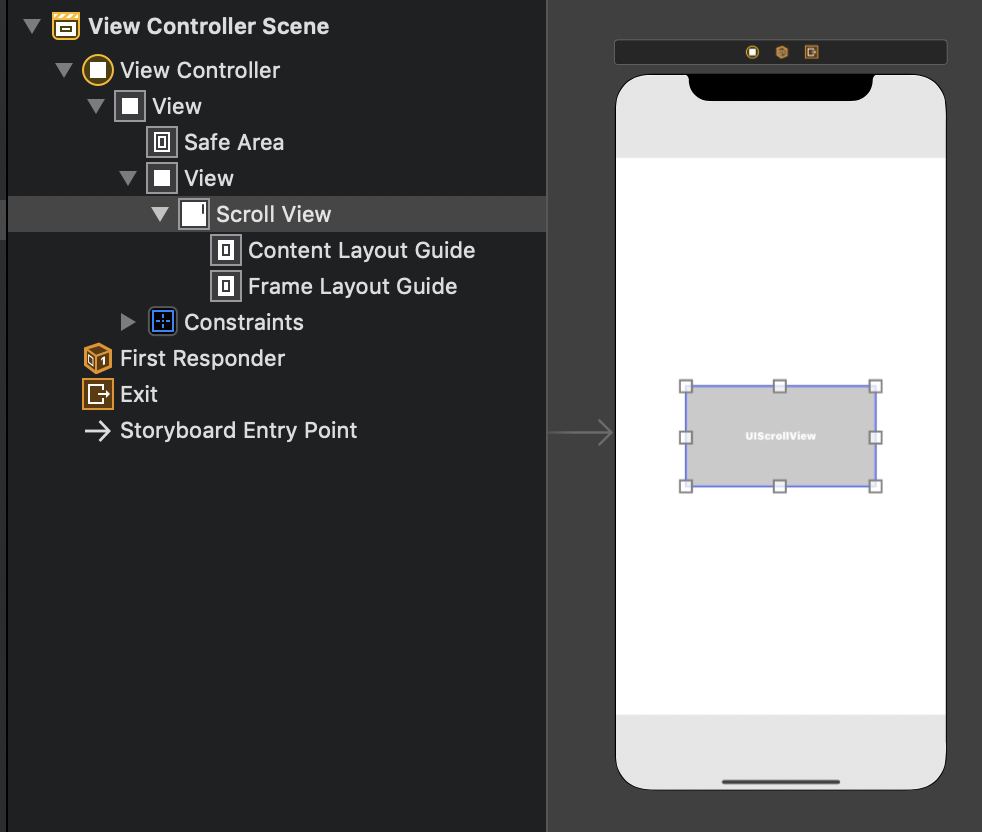
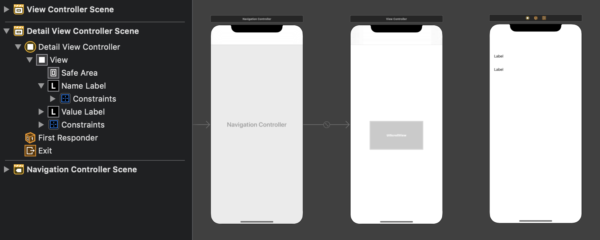
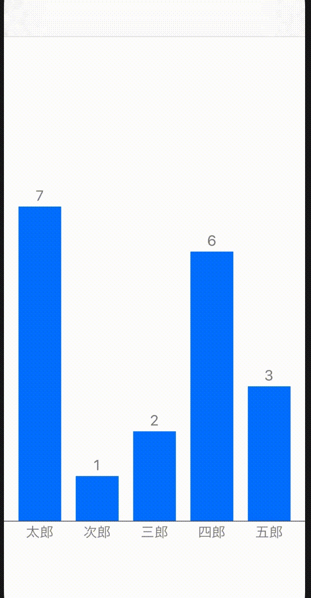

棒グラフをアニメーションさせたり、タップしたら詳細画面に遷移するようにしたい。
(寄り道) StackViewのアニメーション
自分がいままでやったことがあるのは以下のような感じで、frameやlayer.positionをいじるパターン。
UIView.animate(withDuration: 1, animations: {
view.position.x += 100
view.frame.size.height += 20
});
ただし、これをAutoLayoutと混ぜて使おうとすると動かなかったり、動いたとしても変な挙動を起こす。そもそも、AutoLayoutは制約を設定して位置やサイズを決定する仕組みで、frameは位置やサイズを手動で決める仕組み。これが競合を起こすのは当たり前な気もする。
StackViewはframeを設定しても何も反応しない。これは内部的にAutoLayoutっぽいことをやっているからなのかもしれない。例えば次のようにしてもStackViewの子要素は変更されない。
subView.frame.size.height = 100
stackView.addArrangedSubview(subView)
その代わり、次のようにすると、ちゃんと子要素の高さは100になる。
subView.heightAnchor.constraint(equalToConstant: 100).isActive = true
stackView.addArrangedSubview(subView)
よって、StackViewでアニメーションするためには、AutoLayoutでのアニメーションの方法を知る必要がある。
AutoLayoutでのアニメーション
例えば、「ボタンを押すと長方形が0から伸びる」アニメーションを実現したい。
まずは次のように、高さ制約を0に設定しておく。ただし、それを何か変数に入れておく。
var constraint: NSLayoutConstraint
view.addSubview(view0)
constraint = view0.heightAnchor.constraint(equalToConstant: 0)
constraint.isActive = true
アニメーションをしたいタイミングで、次のように書けば良い。
UIView.animate(withDuration: 1, animations: {
constraint.constant = 100
view.layoutIfNeeded()
})
constraintにはconstantプロパティがあるので、そこで制約の定数を変更できる。layoutIfNeededは、アプリにレイアウト変更を直ちにさせるメソッド。
画面遷移後、下から長方形が伸びてくる処理は次のように書ける。
class ViewController: UIViewController {
var constraint: NSLayoutConstraint!
override func viewDidLoad() {
super.viewDidLoad()
let myView = UIView()
myView.backgroundColor = .systemIndigo
view.addSubview(myView)
myView.translatesAutoresizingMaskIntoConstraints = false
myView.bottomAnchor.constraint(equalTo: self.view.bottomAnchor).isActive = true
myView.leadingAnchor.constraint(equalTo: self.view.leadingAnchor).isActive = true
myView.trailingAnchor.constraint(equalTo: self.view.trailingAnchor).isActive = true
constraint = myView.heightAnchor.constraint(equalToConstant: 0)
constraint.isActive = true
}
override func viewDidAppear(_ animated: Bool) {
super.viewDidAppear(animated)
UIView.animate(withDuration: 3, animations: {
self.constraint.constant = 200
self.view.layoutIfNeeded()
})
}
}
StackViewのアニメーション
上の事実がわかってしまうと、StackViewのアニメーションもそこまで難しくない。子要素すべてのConstraintを変更すれば良いだけ。ただしそのために、各Constraintを保存した配列を用意しておく必要がある。
class ViewController: UIViewController {
@IBOutlet weak var stackView: UIStackView!
let colors: [UIColor] = [.systemRed, .systemIndigo, .systemGreen, .systemPink, .systemOrange]
let percentages: [CGFloat] = [0.5, 0.1, 0.9, 0.3, 0.2]
var constraints: [NSLayoutConstraint] = []
override func viewDidLoad() {
super.viewDidLoad()
stackView.distribution = .fillEqually
stackView.alignment = .bottom
for color in colors {
addViewToStackView(bgColor: color)
}
}
override func viewDidAppear(_ animated: Bool) {
super.viewDidAppear(animated)
animateStackView()
}
private func animateStackView() {
UIView.animate(withDuration: 3, animations: {
for (constraint, percentage) in zip(self.constraints, self.percentages) {
let height = percentage * self.stackView.frame.height
constraint.constant += height
}
self.stackView.layoutIfNeeded()
})
}
private func addViewToStackView(bgColor: UIColor) {
let view = UIView()
view.backgroundColor = bgColor
stackView.addArrangedSubview(view)
let constraint = view.heightAnchor.constraint(equalToConstant: 0)
constraint.isActive = true
constraints.append(constraint)
}
}
設計を見直しつつ、前回の機能を持つアプリにアニメーションを付加する。
前回のリファクタリング
前回のままだとアニメーションの機能追加がしづらいので、少しリファクタリングする
Main.storyboard
前回と同じ。

ViewController.swift
ここも特には変わっていない。
struct BarChartModel {
var percentage: CGFloat
var value: Int
var name: String
var color: UIColor
}
class ViewController: UIViewController {
var dataSource = [
(7, "太郎"), (1, "次郎"), (2, "三郎"), (6, "四郎"), (3, "五郎"),
(9, "六郎"), (2, "七郎"), (3, "八郎"), (1, "九郎"), (5, "十郎"),
(1, "十一郎"), (1, "十二郎"), (6, "十三郎")
]
lazy var data: [[BarChartModel]] = format(dataSource)
lazy var maxVal: Int = dataSource.map({ $0.0 }).max() ?? -1
@IBOutlet weak var scrollView: UIScrollView!
override func viewDidLoad() {
super.viewDidLoad()
// Do any additional setup after loading the view.
scrollView.frame = CGRect(
x: 0,
y: 0,
width: scrollView.superview!.frame.width,
height: scrollView.superview!.frame.height
)
configureScrollView()
}
private func configureScrollView() {
scrollView.isPagingEnabled = true
let contentsView = UIView(frame: CGRect(
x: 0,
y: 0,
width: scrollView.frame.width * CGFloat(data.count),
height: scrollView.frame.height
))
scrollView.addSubview(contentsView)
scrollView.contentSize = contentsView.frame.size
for (i, barChartItems) in data.enumerated() {
let widthPercentage = CGFloat(barChartItems.count) / CGFloat(data[0].count)
let frame = CGRect(
x: scrollView.frame.width * CGFloat(i),
y: 0,
width: scrollView.frame.width * widthPercentage,
height: scrollView.frame.height
)
let view = BarChartView(frame: frame, barChartItems: barChartItems)
contentsView.addSubview(view)
}
}
private func format(_ data: [(Int, String)]) -> [[BarChartModel]] {
return data.map({ datum in
let (val, name) = datum
let percentage = CGFloat(val) / CGFloat(maxVal)
let color: UIColor = val == maxVal ? .systemOrange : .systemBlue
return BarChartModel(percentage: percentage, value: val, name: name, color: color)
}).chunked(into: 5)
}
}
extension Array {
func chunked(into size: Int) -> [[Element]] {
return stride(from: 0, to: count, by: size).map {
Array(self[$0 ..< Swift.min($0 + size, count)])
}
}
}
BarChartView.swift
barContainerの作成を別クラスに任せる。また、水平線の描画をメソッドに分離。
class BarChartView: UIStackView {
let fontSize: CGFloat = 20
let textPad: CGFloat = 10
init(frame: CGRect, barChartItems: [BarChartModel]) {
super.init(frame: frame)
axis = .horizontal
distribution = .fillEqually
alignment = .bottom
spacing = 20
isLayoutMarginsRelativeArrangement = true
layoutMargins.left = 20
layoutMargins.right = 20
for item in barChartItems {
addBarContainer(of: item)
}
drawBorderBottom()
}
required init(coder: NSCoder) {
fatalError("init(coder:) has not been implemented")
}
private func addBarContainer(of item: BarChartModel) {
let valueLabelHeight = fontSize + textPad
let nameLabelHeight = fontSize + textPad
let barHeight = (frame.height - valueLabelHeight - nameLabelHeight) * item.percentage
let barContainerView = BarContainerView(
item: item,
barHeight: barHeight,
valueLabelHeight: fontSize + textPad,
nameLabelHeight: fontSize + textPad,
fontSize: fontSize
)
addArrangedSubview(barContainerView)
}
private func drawBorderBottom() {
let border = CALayer()
let borderWidth: CGFloat = 1
border.backgroundColor = UIColor.darkGray.cgColor
border.frame = CGRect(
x: 0,
y: frame.height - (borderWidth/2 + fontSize + textPad),
width: frame.width,
height: borderWidth
)
layer.addSublayer(border)
}
}
BarContainerView.swift
前回まではなかった。棒とラベルの組を管理するクラス。
class BarContainerView: UIStackView {
var barView: UIView!
var valueLabel: UILabel!
var nameLabel: UILabel!
let item: BarChartModel
var barViewHeightConstraint: NSLayoutConstraint!
init(item: BarChartModel, barHeight: CGFloat, valueLabelHeight: CGFloat, nameLabelHeight: CGFloat, fontSize: CGFloat) {
self.item = item
super.init(frame: CGRect.zero)
axis = .vertical
alignment = .fill
distribution = .fill
valueLabel = makeBarLabel(text: "\(item.value)", fontSize: fontSize, height: valueLabelHeight)
addArrangedSubview(valueLabel)
barView = makeBar(barHeight: barHeight)
addArrangedSubview(barView)
nameLabel = makeBarLabel(text: item.name, fontSize: fontSize, height: nameLabelHeight)
addArrangedSubview(nameLabel)
}
required init(coder: NSCoder) {
fatalError("init(coder:) has not been implemented")
}
private func makeBar(barHeight: CGFloat) -> UIView {
let barView = UIView()
barView.backgroundColor = item.color
barView.translatesAutoresizingMaskIntoConstraints = false
barViewHeightConstraint = barView.heightAnchor.constraint(equalToConstant: barHeight)
barViewHeightConstraint.isActive = true
return barView
}
private func makeBarLabel(text: String, fontSize: CGFloat, height: CGFloat) -> UILabel {
let label = UILabel()
label.font = .systemFont(ofSize: fontSize)
label.textColor = .gray
label.text = text
label.textAlignment = .center
label.adjustsFontSizeToFitWidth = true
label.translatesAutoresizingMaskIntoConstraints = false
label.heightAnchor.constraint(equalToConstant: height).isActive = true
return label
}
}
アニメーション追加
初めは棒の高さ0で、そこから伸びていくアニメーションを実装する。そこで、まず高さのConstraintは0でなければならない。また、画面が完全に表示しきった後にアニメーションを開始させたいので、ViewControllerのviewDidAppearメソッドにその処理を記述する。とはいえ「scrollViewの中の各ページにおいて、BarChartViewの中の各BarContainerViewのConstraintを変更する」をベタ書きすると汚いので、少し工夫する。
BarContainerView.swift
makeBar関数のConstraintの記述を以下のように変更する。
barViewHeightConstraint = barView.heightAnchor.constraint(equalToConstant: 0)
barHeightを保存するためのプロパティを追加する。init関数で初期化する。
let barHeight: CGFloat
...
init(...) {
self.barHeight = barHeight
...
}
次の関数を追加しておく。外部から呼び出す予定なのでprivateにはしない。
func growUpBar() {
barViewHeightConstraint.constant = barHeight
}
BarChartView.swift
上記の関数をまとめる関数を定義。
func growUpBars() {
for barContainerView in (arrangedSubviews as! [BarContainerView]) {
barContainerView.growUpBar()
}
}
ViewController.swift
上記の関数をまとめる関数を書く。最後にlayoutIfNeededをすることを忘れずに。
override func viewDidAppear(_ animated: Bool) {
super.viewDidAppear(animated)
animateBarChartView()
}
private func animateBarChartView {
let contentsView = scrollView.subviews[0]
UIView.animate(withDuration: 3, animations: {
for barChartView in (contentsView.subviews as! [BarChartView]) {
barChartView.growUpBars()
}
contentsView.layoutIfNeeded()
})
}

補足: viewDidAppearでないタイミングでのアニメーションの実行
viewDidAppearでないタイミングでアニメーションを実行したいことがある。
例えば、「データを受信した後に棒グラフのアニメーションを実行する」というケースを考える。この場合は、アニメーション実行前にlayoutIfNeededを実行することで対応できる。
以下は、通信する関数をcommunicateSomeone、受け取ったデータをdataとしている例である。
communicateSomeone(completion: { data in
// ==============
// 何かの処理
// ==============
DispatchQueue.main.async {
self.configureScrollView()
self.view.layoutIfNeeded()
self.animateBarChartView()
}
});
棒グラフのタップ処理
例えば、「グラフの要素をタップすると、詳細画面に飛ぶ」という機能を追加したい。
上記のやり方を真似れば簡単に実現できる。
詳細画面の準備
DetailViewController.swiftを作成し、内容を以下のようにする。
class DetailViewController: UIViewController {
@IBOutlet weak var nameLabel: UILabel!
@IBOutlet weak var valueLabel: UILabel!
var item: BarChartModel!
override func viewDidLoad() {
super.viewDidLoad()
// Do any additional setup after loading the view.
nameLabel.text = item.name
valueLabel.text = "\(item.value)"
}
}
Main.storyboardは以下のようにする。新しく追加したViewControllerのクラスはDetailViewControllerとし、identifierをdetailに設定する。

諸々の追加
BarChartView.swiftで次の関数を定義する。barContainerViewすべてのタップイベントを登録するメソッド。
func addGestureRecognizersToBarViews(target: Any?, action: Selector?) {
for barContainerView in (arrangedSubviews as! [BarContainerView]) {
barContainerView.addGestureRecognizer(UITapGestureRecognizer(target: target, action: action))
}
}
ViewController.swiftのconfigureScrollViewにて、viewの宣言の直後にaddGestureRecognizersToBarViewsを呼び出す。
for (i, barChartItems) in data.enumerated() {
...
let view = BarChartView(frame: frame, barChartItems: barChartItems)
// 追加
view.addGestureRecognizersToBarViews(target: self, action: #selector(barViewTapped(_:)))
contentsView.addSubview(view)
}
タップ時のメソッドを定義する。
@objc func barViewTapped(_ sender: UITapGestureRecognizer) {
let barContainerView = sender.view as! BarContainerView
let item = barContainerView.item
let vc = storyboard?.instantiateViewController(identifier: "detail") as! DetailViewController
vc.item = item
navigationController?.showDetailViewController(vc, sender: self)
}
良い感じ。

今回は棒だけでなく、ラベルや数字がタップされても詳細画面に飛ぶように書いた。もし棒だけタップしたら遷移するようにしたいなら、GestureRecognizerをbarViewに設定すれば良い。